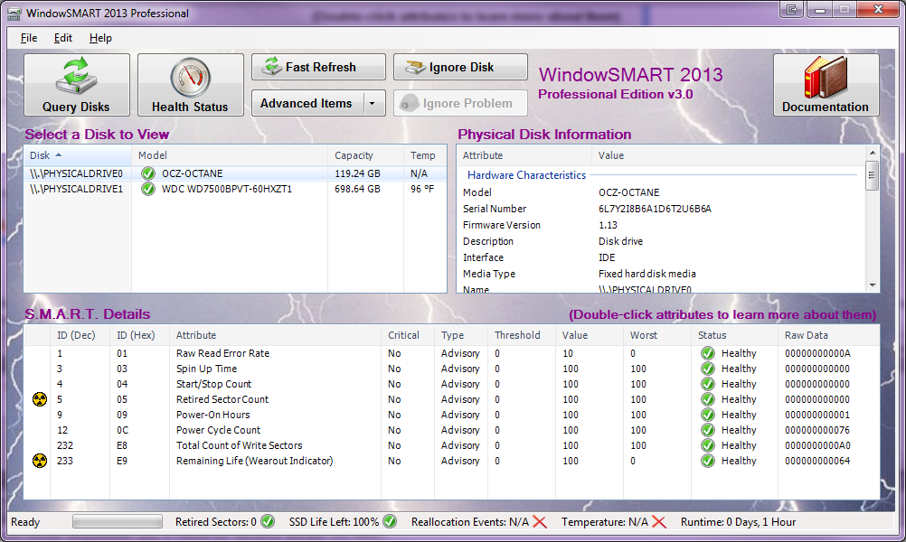

Running WindowSMART 2015
WindowSMART 2015 contains two main components: a Windows service and a user interface (UI). Both are installed when you run the installer, and the service is started immediately. The service is always on, and whenever your computer is rebooted, the service starts up automatically. The first time the WindowSMART service runs, it will load its default configuration and save it to the Windows Registry, and then start monitoring your disks for problems right away. Detected problems will appear in the UI, and can be sent out as alerts via email as well as mobile devices running Apple's iOS or Android.
To run the WindowSMART UI, click the Start button. Select All Programs > Dojo North Software > WindowSMART 2015. Users running Windows Vista or later (with UAC enabled) will receive a UAC prompt asking for confirmation to run the UI.
When the UI starts, it will query the Windows Registry to examine the data stored there by the WindowSMART service. The service stores not only the SMART data, but health flags and other information about the disks such as capacity, serial number, etc. The list of physical disks will be populated, and the first disk is automatically selected. Physical disk characteristics will be displayed in the Physical Disk Information pane, and if SMART data is available for the disk, the SMART details table and status bar will be updated.
Below is an example of what you may see. The example below is from an HP EliteBook 8540w laptop which contains an OCZ Octane 128 GB SSD, an internal 320 GB HDD, and four external USB 3.0 HDDs, two of which are connected to the laptop's built-in USB 3.0 ports, and the other two are connected to a SIIG ExpressCard USB 3.0 adapter.

To navigate, click on a physical disk and its physical characteristics, as well as its SMART data (if available), will be displayed for you. If you add or remove disks, or just want to refresh the data of existing disks (many SMART attributes change constantly), click the Refresh Disks button. You can also click the Fast Refresh button, which grabs the latest data in the Registry, rather than re-polling the disks.